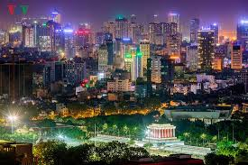

Hà Nội là thủ đô, thành phố trực thuộc trung ương và cũng là một đô thị loại đặc biệt của Việt Nam. Hà Nội nằm về phía tây bắc của trung tâm vùng đồng bằng châu thổ sông Hồng, với địa hình bao gồm vùng đồng bằng trung tâm và vùng đồi núi ở phía bắc và phía tây thành phố. Với diện tích 3.358,6 km2 và dân số 8,05 triệu người (2019), Hà Nội là thành phố có diện tích lớn nhất Việt Nam

Hà Nội đã sớm trở thành một trung tâm chính trị, kinh tế và văn hóa ngay từ những buổi đầu của lịch sử Việt Nam. Với vai trò thủ đô, Hà Nội là nơi tập trung nhiều địa điểm văn hóa giải trí, công trình thể thao quan trọng của đất nước, đồng thời cũng là địa điểm được lựa chọn để tổ chức nhiều sự kiện chính trị và thể thao quốc tế. Đây là nơi tập trung nhiều làng nghề truyền thống, đồng thời cũng là một trong ba vùng tập trung nhiều hội lễ của miền Bắc Việt Nam.